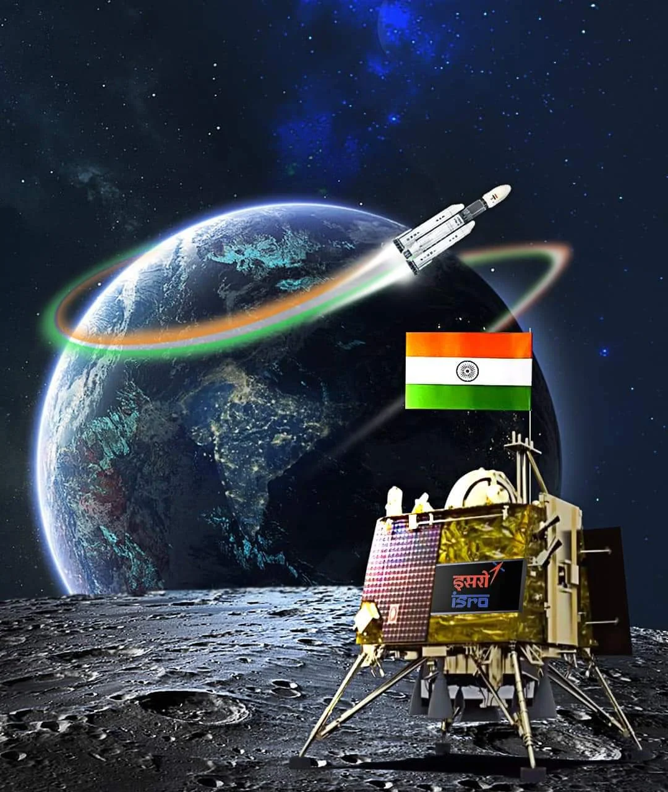

<!DOCTYPE html>
<html lang="en">
<head>
    <meta charset="UTF-8">
    <meta name="viewport" content="width=device-width, initial-scale=1.0">
    <link rel="stylesheet" href="https://cdnjs.cloudflare.com/ajax/libs/font-awesome/6.4.2/css/all.min.css" integrity="sha512-z3gLpd7yknf1YoNbCzqRKc4qyor8gaKU1qmn+CShxbuBusANI9QpRohGBreCFkKxLhei6S9CQXFEbbKuqLg0DA==" crossorigin="anonymous" referrerpolicy="no-referrer" />
    <link rel="icon" href="./assets/logo.png">
    <title>Frontend Dev. Republic Coders</title>
    <link rel="stylesheet" href="style.css">
    <link rel="preconnect" href="https://fonts.googleapis.com">
<link rel="preconnect" href="https://fonts.gstatic.com" crossorigin>
<link href="https://fonts.googleapis.com/css2?family=Montserrat:wght@300;400;500&display=swap" rel="stylesheet">
    <title>Info</title>
    <!-- <a href="quiz.html">About us</a> -->

    <!-- <div class="info" id="info">
        
        <div class="detail">
            <h1>Chandrayan-3</h1>
            <h4>Chandrayaan-3 had been proposed by the Indian Space Research Organisation (ISRO) 
                as the third mission in the Chandrayaan series, following Chandrayaan-1 and
                 Chandrayaan-2. Chandrayaan-1 was India's first lunar probe, launched in 2008, 
                 while Chandrayaan-2, launched in 2019, aimed to explore the lunar south pole region.
               Chandrayaan-3 was intended to be a follow-up mission, primarily focusing on lunar lander
                and rover capabilities. The mission was aimed at furthering India's exploration of the
                 Moon, with a specific emphasis on enhancing the understanding of the lunar surface 
                 and its resources.</h4>
        </div>
    </div> -->
</head>
<body>
    
</body>
</html>